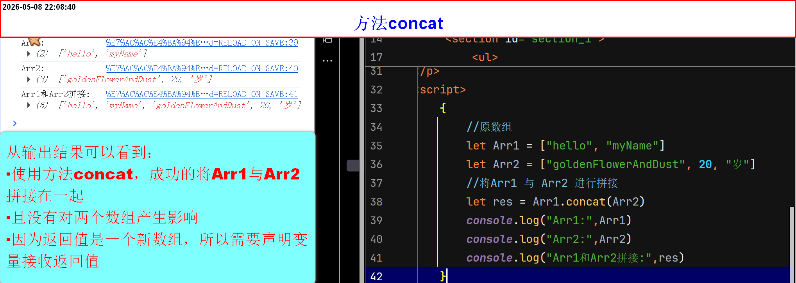
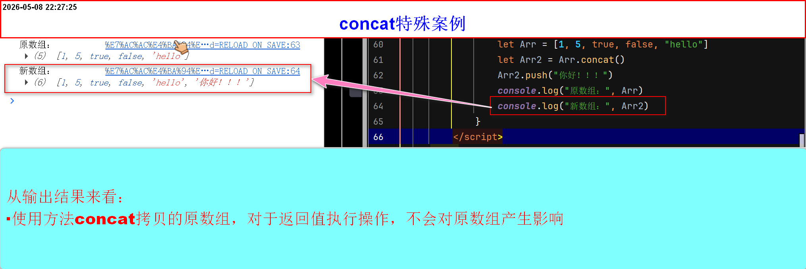
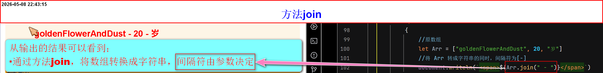
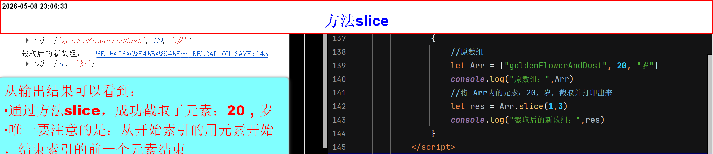
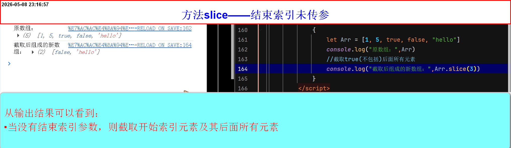
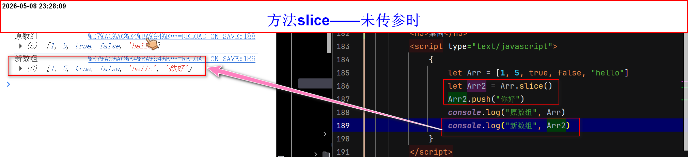
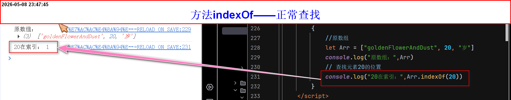
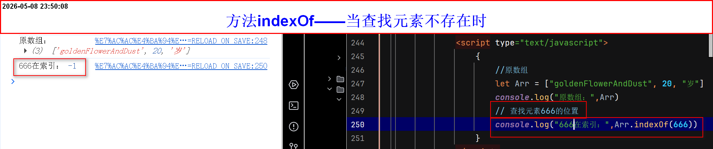

数组常用方法(原数组不受影响)
数组常用方法(原数组不受影响):
1.concat
2.join
3.slice
4.indexOf
4.lastIndexOf
方法
concat- 方法(
concat):是用来将两个数组拼接在一起，组成一个新数组 -
语法：
数组1.concat(数组2,元素,数组3)concat功能非常强大，不仅可以多个数组同时拼接，还可以单个元素拼接 - 返回值是拼接后的数组，是一个新数组，与原数组互不影响
- 因为返回值是一个新数组，所以需要声明变量接收返回值，或直接打印
-
实例1(拼接演示)
//原数组
let Arr1 = ["hello", "myName"]let Arr2 = ["goldenFlowerAndDust", 20, "岁"]
//将Arr1 与 Arr2 进行拼接let res = Arr1.concat(Arr2)// 用 声明变量,接收返回值
-
关于concat特殊用法
- concat如果拼接的是空数组，那么类似于浅拷贝了一个原数组
- 注意：如果原数组中的元素是对象或数组，那么新数组中的这些元素只是引用了同一个对象，修改对象内部属性会影响原数组。
-
因为返回值是创建新数组，所以，在concat返回值使用(
pop,push,unshift,shift,reverse,splice,sort)不会对原数组产生影响 -
实例(concat特殊用法)

方法
join- 方法(
join):是用来将数组转换成字符串 -
语法：
字面量.join()()内可以传参数，意思是，将数组转换成字符串的同时，将元素与元素之间，数据与数据之间符号由传的参数决定 -
注意：
- 如果不传参数，默认用逗号 , 分隔。
- 如果数组元素是 null 或 undefined，会转为空字符串
- 因为返回值是一个字符串，所以需要声明变量接收返回值，或直接打印
- 返回值是一个字符串
-
实例1
//原数组
let Arr = ["goldenFlowerAndDust", 20, "岁"]
//将 Arr 转成字符串的同时，间隔符为[-]document.writeln(Arr.join("-"))// 将转换的字符串，输出到页面上
方法
slice- 方法(
slice):是用来截取原数组的元素 -
语法：
字面量.slice(开始索引,结束索引)包含前，但是不包含后 - 返回值是截取的元素，组成的一个新数组
- 既然是新数组，那就需要要声明变量，接收返回值，或直接打印，不然没法调用
- 包含前，但是不包含后：截取的元素包括开始索引的元素，但是不包括结束索引的元素
-
实例1
//原数组
let Arr = ["goldenFlowerAndDust", 20, "岁"]
//将 Arr内的元素：20，岁，截取并打印出来 let res = Arr.slice(1,3)console.log(Arr)
-
注意：
- 若没有结束索引参数
- 那么截取的是：开始索引元素及其后面所有的元素
- 返回值同样是：截取元素所组成的新数组，同样需要声明变量接收，或直接使用，否则无法调用
-
实例

-
当不传参数的情况
- 当开始索引与结束索引均没有传参数
- 最后的截取的是整个原数组，类似于浅拷贝
- 浅拷贝：数组内的对象或其他复杂数据类型，同样会影响其对应的原对象或其他复杂数据类型
- 返回值同样是：截取元素所组成的新数组，同样需要声明变量接收，或直接使用，否则无法调用
- 因为是新数组，所以使用(
pop、push、unshift、shift、splice、reverse、sort)不会对原数组产生影响 -
案例

-
当参数为负数的时候
- 参数为负数时：索引倒序(从后往前)数
- 如：-1(指的是最后一个元素)、-2(指的是倒数第二个元素)、依次类推
- 同样分三种情况：结尾索引不传参、开始结尾均传参、开始结尾均不传参
- 结果都是一样的：同样包前不包后。只要注意负数具体是那个元素即可
方法
indexOf- 方法(
indexOf):是用来返回查找元素的索引值 -
语法：
字面量.indexOf(需要查找的元素,开始查找索引) - 返回值是一个索引
- 需要声明变量接收返回值，或直接使用
-
注意：
- 若数组内存在空元素(空位)，不会被找到，直接跳过
- 若有重复的元素，只会查找第一个符合的索引
-
只传第一参数
- 从索引0开始找
-
实例1(只传第一个参数)
//原数组
let Arr = ["goldenFlowerAndDust", 20, "岁"]
// 查找元素20的位置console.log("20在第：",Arr.indexOf(20))
-
当查找元素不存在
- 当返回值是-1的时候，表示没有匹配的元素
-
案例：

-
不传参数
- 查找undefined
- 若没有找到，返回-1
- 空元素不是undefined
方法
lastIndexOf- 与indexOf不同的是，从最后面开始找(第二个参数：从该索引开始向前查找)，其他的知识完全一样